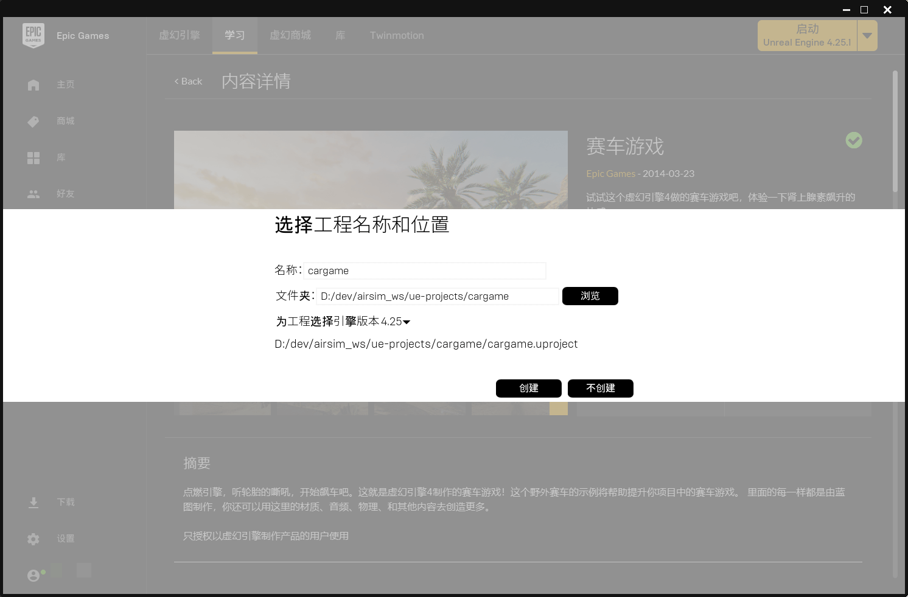
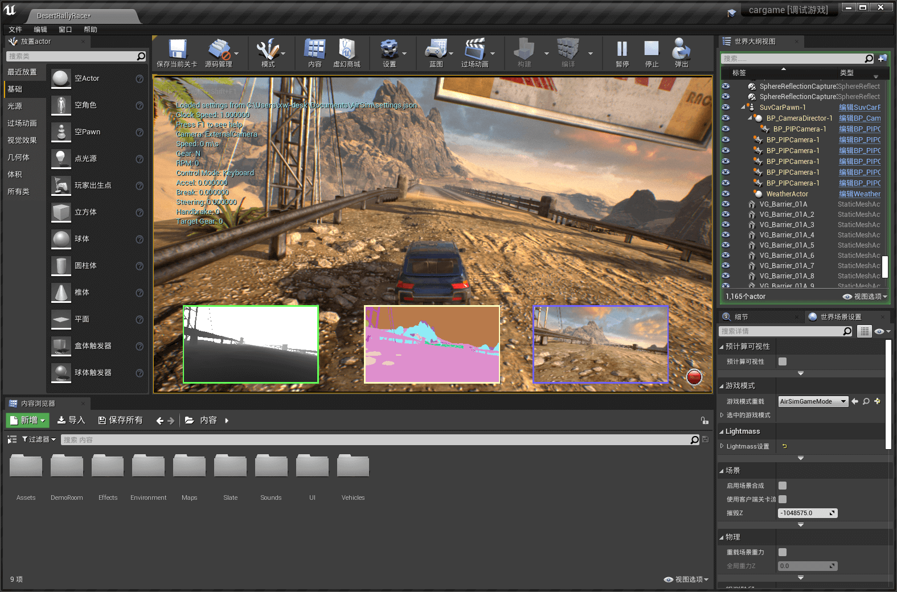

对自定义 UE 环境导入 AirSim 插件小车。本文主要参考官方文档 Creating and Setting Up Unreal Environment。
[TOC]
地图准备
因为原文使用的一个免费环境在 UE 商城没有找到。不过官方在 github 上提供了几个地图可用，不过下载速度太慢了。所以，本文直接从 UE 的 学习 tab 下载了一个免费的赛车游戏项目，大概一个 G 左右。官方提供的几个地图等下载好之后再试试。
创建 UE 工程
点击
创建工程按钮，输入名称和保存的文件夹，创建工程。这里 不要出现中文路径， 貌似后面编译老出问题，换成英文之后就过了。
打开项目所在文件夹，打开 ue 项目，这里是
cargame.uproject. 首次打开估计要编译一会儿，这个看电脑配置，我大概花了 10 分钟 (i7 8700 + GTX 1070Ti + 固态)。PS：如果使用官方示例中的那个地图，因为没有源码文件，所以触发不了编译。所以官方的那份文档有一步骤是建立一个新的 C++ 的空类。这里不需要，也不能，否则该项目模块编译不了。
效果如下图所示，这个是个完整的游戏，如果点击
运行会出来一辆小车，是可以玩的。不过这辆车不是我们要的那辆。
生成 Visual Studio 项目
在
UnReal Editor中点击文件，生成Visual Studio项目。之后，会在项目文件夹下看到一个 vs 项目文件cargame.sln，这里暂时不要打开。先关闭编辑器。把
AirSim项目下的AirSim插件拷贝（路径Unreal/Plugins）到cargame项目根目录下，如图。- 创建并设置 Unreal Engine 环境.assets/image-20200607121222918.png)
右键编辑
cargame.uproject, 找到"Plugins"字段，把AirSim插件添加进去. 保存。1
2
3
4
5
6
7
8
9
10
11
12
13
14"Plugins": [
{
"Name": "PhysXVehicles",
"Enabled": true
},
{
"Name": "RawInput",
"Enabled": true
},
{
"Name": "AirSim",
"Enabled": true
}
],右键
cargame.uproject，选择Generate Visual Studio project fiels. 这时候，目录下会出现 vs 的工程文件cargame.sln.打开 vs 工程文件
cargame.sln，工程配置为DSebugGame Editor,Win64。编译运行工程，成功后，会自动打开 ue 编辑器的，和运行
Blocks示例工程一样。
加载 AirSim 插件
打开
世界场景设置窗口。如果没有的话，点击窗口，勾选世界场景设置，即可。效果如下图。PS: 这里我找了好久，官方文档说默认有的，我这里没有，一直怀疑我安装有啥问题。
在
世界场景设置中的游戏模式的游戏模式重载下拉框选择AirSimGameMode. 至此所有配置均完成。
运行仿真
在编辑器中点击 运行 ，然后就出现了我们熟悉的车了，把几个视图窗口调出来。

其他
在编辑器的
细节窗口可以看到选中的 对象的一些信息。比如这里我选中了小车，小车运动时，一些数据能实时变化。如果鼠标切换不出来， 按快捷键
shift + F1.鼠标切出时，可能仿真视图界面会出现卡顿的现象。点击
编辑->编辑器偏好设置……。搜索一下cpu，把编辑器性能下的处于背景中时占用较少CPU的勾勾去掉即可。
最后
愉快地继续折腾吧。